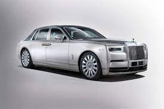

The new Rolls-Royce Ghost: a car for the “post-opulent” generation
Rolls-Royce makes some of the world's most luxurious cars. Known for producing hand-crafted automobiles that promise a seamless "magical carpet ride" for its customers, a Rolls-Royce car does not come cheap. These are some of the best-selling Rolls-Royce models, and these are their entry-level prices. But with virtually unlimited optional extras, upgrades, and customizations, the true cost of a bespoke Rolls-Royce has no limits. In fact, Rolls-Royce refuses to even discuss its base prices.
So, we’re committed to providing an environment where you can be yourself and be your best. This includes welcoming you into an inclusive culture, investing in your continuous learning and development, giving you access to breadth and depth of experience, providing you with challenging and rewarding opportunities to make a difference, offering flexible working options and giving ample reward and recognition
Rolls-Royce owners are considered family, connected by an exhilarating driving experience unlike any other. As a family, you are granted access to a world of endless inspiration and excellence. This includes personalized care from our dedicated teams, exclusive experiences offline and on, and, of course, the finest motor car services in the world. Plus, every new Rolls-Royce is protected by a four-year, unlimited mileage. The warranty encompasses a wide range of serviceable vehicle components to minimize any inconvenience to you during the warranty period
Inside, the Rolls Royce Ghost will get features such as electric opening doors, an illuminated dashboard, a starlight headliner, multiple interior themes, customisable inserts, a 360-degree camera, active cruise control, and a Hi-Res Heads-Up-Display (HUD). This year February its expecting to luanch Rolls Royce Ghost model which has more exciting features.
Feb' 17, 2022 : Fastest Rolls Royce Cars In The World Feb' 13, 2022 : Rolls-Royce Redesigns The Spirit Of Ecstasy For The New Spectre EV Dec' 22, 2021 : Unconventionally Traditional: Presenting The 2022 Rolls Royce Ghost Black Badge At $398,850 Dec' 21, 2021 : Battle Of The Uber-Luxury Brutes: 2022 Bentley Flying Spur V/S 2022 Rolls-Royce Ghost Oct' 25, 2021 : 2023 Rolls Royce Ghost Black Badge Releasing Oct 28.
 |
 |  |
 |
The 2022 Rolls-Royce Ghost has a spirited 6.75L twin-turbo V12 that is capable of spitting fire at 563 horsepower and 627 lb-ft of torque. The peak power is delivered at 5,000 RPM and the torque is also available at relatively low RPMs. The engine is mated to an eight-speed automatic transmission and together this duo transfer power to all wheels as standard. The engine is massive and is pretty powerful. Even though the Ghost definitely falls under the heavy-weight category, it still is able to hit 60 MPH in just 4.6 seconds. So, if you are late for your business meeting, one instruction to the chauffeur will allow him to floor you to your destination in speed. It can also do the quarter-mile sprint in just 12.9 seconds.
The top speed is limited to 155 MPH. Not only does it offer luxury, but also performance. The Ghost, like all other Rolls-Royces, is a joy to drive for any chauffeur. The driving is deemed to be sharp and the car’s steering is precise and responds to inputs pretty well. It has a 50/50 weight distribution in the all-wheel steering wheel. It offers arguably the greatest ride quality in any car that you can buy. Not one single bump, not one single imperfection will be felt by the occupants on the inside. The adaptive suspension works its magic and even uses a road-scanning camera that anticipates and compensates for bumps on the road. Inside the Ghost, it would feel as if you were floating over the road.
While the V-12 engine is still sourced from BMW, the Ghost rides on an in-house aluminum spaceframe now and no longer uses a 7 Series-derived architecture. This spaceframe isn’t new, as it debuted in the Phantom and then found its way into the Cullinan, but it makes the Ghost a more rigid and dynamic sedan compared to the outgoing model.
This new architecture also comes with a new suspension setup, which refined and improves Rolls-Royce’s already iconic Magic Carpet Ride. This new suspension layout is called the Planar Suspension System and it includes a world-first technology in the form of an upper wishbone damper mounted above the front suspension. It works alongside the familiar Flagbearer system, which uses cameras to "read" the road ahead, to increase stability at any speed.
The Ghost and the Flying Spur are probably the only two luxury cars that go head to head at this price tag. The Flying Spur is also the only one that compares with the Ghost. Which one is better? Well, the Flying Spur is for those who want more performance and utter luxury. And it also costs about a hundred grand less. The Ghost is for those who want the ultimate luxury and comfort with no compromises. The Ghost is way more expensive but also worth the ride quality and the comfort that it provides. But both are excellent luxury cars.
The Mercedes-Benz Maybach S-class is an extremely pleasing vehicle as well. It is fast, it is luxurious and it handles well. It also has lots of new tech. However, when it comes to the ultimate luxury experience, nothing can compare to the Ghost (except other Rolls-Royce models). They are not even in the same echelon if you look at it. The Ghost is also extremely more expensive, and only a niche of people can afford it, but the S-class can be afforded by slightly more.
Kings Place, 90 York Way, LONDON, N1 9FX, England.
Switchboard: 01332 242424 this is open during UK business hours. If you wish to apply for a position at Rolls-Royce or have a query about your application please see our Careers site: https://careers.rolls-royce.com/